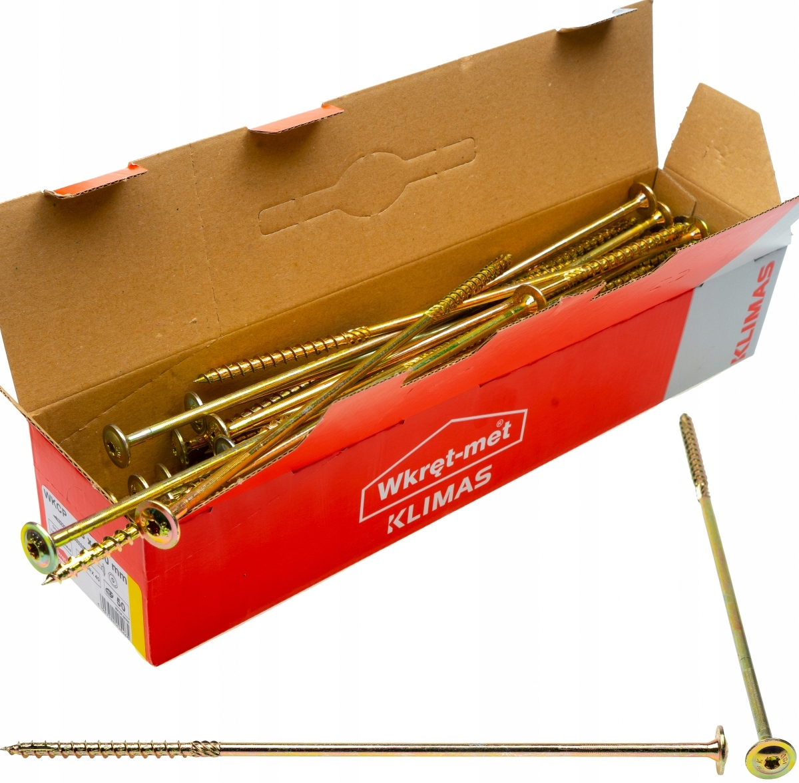
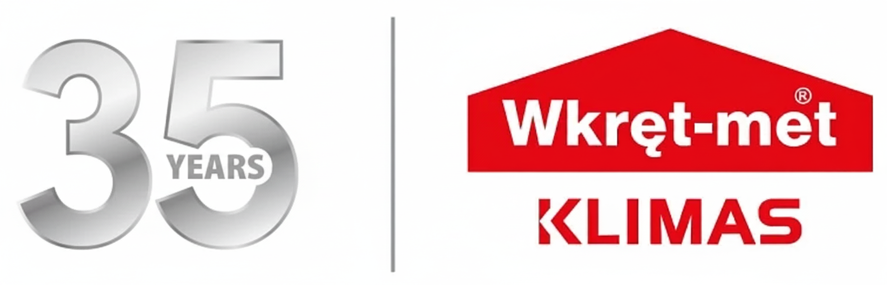

Pevný spoj začíná promyšleným detailem.
Tesařské konstrukční vruty Klimas WKCP spojují dřevěné hranoly, trámy a další nosné prvky. Tyto vruty do dřeva s talířovou hlavou se uplatní u krovů, dřevěných rámů i spojů desek na bázi dřeva. Široká hlava se opře o povrch a pomáhá přitáhnout spojované díly k sobě.
Přínos značky Klimas je v detailech, které pracují společně: frézovací žebra a voskový povlak snižují odpor při šroubování, ozubený závit protíná dřevní vlákna a zdokonalený řezný hrot usnadňuje první zachycení vrutu. Drážka TX přenáší krouticí moment při dotahování. Při opakované montáži tak oceníte snazší vedení vrutu a plynulejší práci.
Varianta 8 × 300 mm má částečný závit a žlutý zinkový povlak. Rozměr vybírejte podle tloušťky spojovaných prvků, potřebného zakotvení a podmínek konstrukce. Správný návrh spoje je stejně důležitý jako kvalitní vrut.

Výrobce při zkouškách nového hrotu uvádí až o 40 % kratší čas šroubování při stejném zatížení a až o 20 % nižší odpor při šroubování. Dosažená časová úspora závisí na druhu spoje a použitém dřevu.
Technické údaje
Pevnostní údaje jsou charakteristické hodnoty pro průměr 8 mm s uvedenými podmínkami. Nevyjadřují univerzální únosnost hotového spoje; hodnota pevnosti v kroucení není montážní moment.
Rozměry výrobku
| Vnější průměr závitu (dw) | 8 mm |
|---|---|
| Celková délka vrutu (Lw) | 300 mm |
| Délka závitu (Lg) | 100 mm |
| Maximální užitková délka (tfix) | 200 mm |
| Vnitřní průměr závitu (d1) | 5,5 mm |
| Průměr hladké části (ds) | 5,78 mm |
| Průměr hlavy (Dw) | 21 mm |
Provedení a materiál
| Tvar hlavy | Talířová |
|---|---|
| Drážka a velikost bitu | TX 40 |
| Provedení závitu | Částečný závit |
| Materiál | Uhlíková ocel |
| Povrchová úprava | Žlutý galvanický zinek |
Charakteristické pevnostní údaje
| Charakteristický plastický moment (My,k) | 25 N·m |
|---|---|
| Vytažení ze dřeva (fax,k) | 12 N/mm² při ρₐ = 350 kg/m³ |
| Vytažení z LVL (fax,k) | 13 N/mm² při ρₐ = 480 kg/m³ |
| Protažení hlavy dřevem (fhead,k) | 12 N/mm² při ρₐ = 350 kg/m³ |
| Protažení hlavy LVL (fhead,k) | 12 N/mm² při ρₐ = 480 kg/m³ |
| Charakteristická pevnost v tahu (ftens,k) | 25 kN |
| Charakteristická pevnost v kroucení (ftor,k) | 27 N·m |
Prodávané balení
| Počet v balení | 50 ks |
|---|
Proč si vybrat WKCP
Silný přítlak. Přesné vedení bitu.
Široká talířová hlava zvětšuje dosedací plochu a zvyšuje odolnost proti protažení dřevem. Drážka TX pomáhá přenést krouticí moment do vrutu. Výsledkem je pevné dotažení bez samostatné podložky.
Menší odpor při šroubování
Frézovací žebra na dříku rozšiřují otvor v upevňovaném prvku. Spolu s voskovým povlakem snižují potřebný krouticí moment, takže montáž jde snáze a akumulátorové nářadí nemusí překonávat zbytečný odpor.
Hrot, který se snadněji zachytí
Zdokonalený frézovací hrot usnadňuje začátek montáže. Dodatečné závity u špičky pomáhají zachytit dřevo při menším přítlaku a řezné ozubení průběžně protíná dřevní vlákna. Tyto detaily oceníte zejména při opakovaném šroubování tesařských spojů.
Montáž krok za krokem
Připravte si
- Šroubovák nebo šroubovací nářadí
- Bit TX 40
- Měřidlo a pomůcky pro přidržení dřeva
Vyberte rozměr a připravte dřevo
Zohledněte tloušťku prvků a potřebné zakotvení. Použijte nepoškozené dřevo a díly přesně ustavte.
Správně nasaďte bit
Použijte TX 40 a nechte jej úplně dosednout do drážky. Vrut veďte v ose navrženého spoje.
Zašroubujte a dotáhněte
Vrut veďte do dřeva a dotáhněte tak, aby se talířová hlava opřela o povrch upevňovaného dílu. Dodržte návrh a rozteče spoje.
Použití a správný výběr
Vhodné použití
- Masivní konstrukční dřevo a dřevěné hranoly
- Lepené dřevo, panely X-Lam a LVL
- Desky na bázi dřeva v navrženém spoji
Při výběru zohledněte
- Hlavu je třeba nechat opřenou o povrch spoje.
- Povrchovou úpravu zvolte podle vlhkosti a prostředí.
- Nosný spoj navrhněte podle materiálu, zatížení a vzdáleností.
Délku vybírejte podle celého spoje, nikoli pouze podle tloušťky prvního hranolu. Rozhoduje také hloubka zakotvení závitu ve druhém prvku.
Otázky, které pomohou při výběru
Jaký bit potřebuji na WKCP 8 × 300 mm?
Pro tento konkrétní rozměr použijte bit TX 40. Bit musí správně dosednout do drážky; menší bit z jiného průměru vrutu není vhodnou náhradou.
Je nutné dřevo předvrtat?
Výrobce popisuje přímou montáž WKCP do dřeva bez předvrtání. Řezný hrot a ozubení usnadňují jeho pronikání. U nosného spoje je zároveň třeba dodržet podmínky pro konkrétní dřevo, rozteče a vzdálenost od okraje podle návrhu a dokumentace výrobce.
Proč zvolit talířovou hlavu?
Talířová hlava se opírá o větší plochu dřeva, zlepšuje přítlak a odolává protažení upevňovaným prvkem. Je vhodná tam, kde má hlava zůstat na povrchu spoje. Pro zarovnané zapuštění hlavy je potřebný jiný typ vrutu.
Co znamenají délky 300, 100 a 200 mm?
300 mm je celková délka vrutu, 100 mm je délka závitu a 200 mm je maximální užitková délka t_fix uvedená výrobcem. Tyto hodnoty nezaměňujte s univerzální dovolenou tloušťkou každého spoje; potřebnou hloubku zakotvení určuje konkrétní návrh.
Je tato varianta vhodná i pro venkovní spoje?
Jde o uhlíkovou ocel se žlutým zinkovým povlakem, nikoli o nerezovou ocel. Vhodnost pro venkovní spoj závisí na vystavení vlhkosti a požadované ochraně proti korozi. Povrchovou úpravu vyberte podle podmínek stavby; samostatně existují také jiné povrchové varianty WKCP.
Mám vrut dotahovat momentem 27 N·m?
Ne. Hodnota 27 N·m v pevnostní tabulce je charakteristická pevnost vrutu v kroucení, nikoli předepsaný montážní moment. Nelze ji použít jako nastavení utahování ani jako únosnost hotového spoje.
Dokumenty a další informace

Klimas. Kvalita, kterou poznáte na detailech.
Promyšlená geometrie hlavy, dříku a hrotu dělá z WKCP ucelený systém pro spojování dřeva. K dispozici jsou rozměrové údaje, technický list a evropské technické posouzení výrobce – konkrétní podklady pro správný výběr a návrh spoje.
Dokumentace výrobceS nákupem vám pomůžeme
14 dní na vrácení
Zboží můžete vrátit do 14 dnů. S převzetím vám pomůžeme i zajištěním kurýra.
Odesíláme skladové zboží
Skladové zboží odesíláme do 24 hodin; objednávky do 15:00 ve stejný pracovní den.
Zkušenosti zákazníků
Při výběru obchodu si prohlédněte také hodnocení a zkušenosti našich zákazníků.
Individuální přístup
Potřebujete poradit s produktem nebo objednávkou? Během pracovní doby se na nás můžete obrátit.